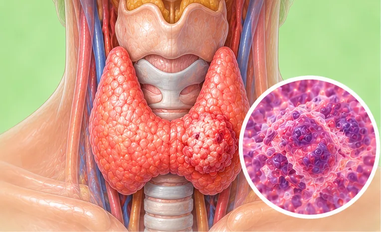

AI
AI Body Master
智能舒缓调理
EN
中文
BM
ID
健康指南
›
颈部
颈部
51 种疾病与症状
亚临床甲状腺功能亢进
亚临床甲状腺功能减退症
亚急性甲状腺炎
交感神经型颈椎病
单纯性甲状腺肿
喉乳头状瘤
喉息肉
喉炎
喉癌
寰枢椎半脱位
慢性喉炎
桥本甲状腺炎
椎动脉型颈椎病
毒性弥漫性甲状腺肿
甲亢性心脏病
甲状旁腺功能减退症

甲状腺乳头状癌
甲状腺功能亢进症
甲状腺功能减退
甲状腺炎
甲状腺瘤
甲状腺癌
甲状腺结节
甲状腺结节钙化
甲状腺肿
甲状腺腺瘤
白喉
神经根型颈椎病
结节
肥厚性咽炎
胸锁关节脱位
脊髓型颈椎病
落枕
蛋白质-能量营养不良
过敏性咽炎
颈动脉斑块
颈动脉狭窄
颈动脉硬化
颈动脉闭塞
颈心综合征
颈椎变形
颈椎病
颈椎管狭窄症
颈椎间盘突出症
颈椎骨质增生
颈淋巴结炎
颈部淋巴结结核
颈部痒
颈静脉怒张
食管狭窄
食管肿瘤
在 AI Body Master 应用中打开
身体地图、5 步身体评估和你的舒缓方案